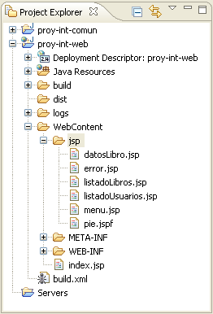
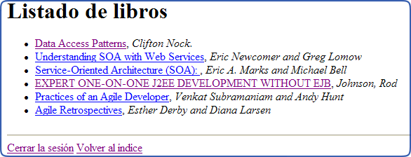
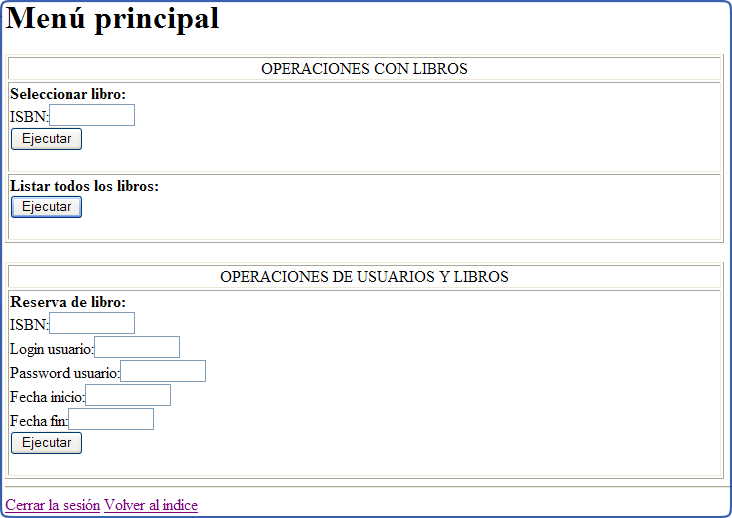
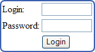
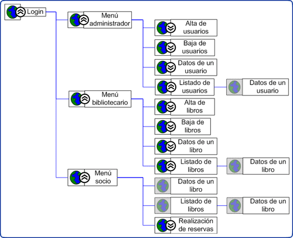
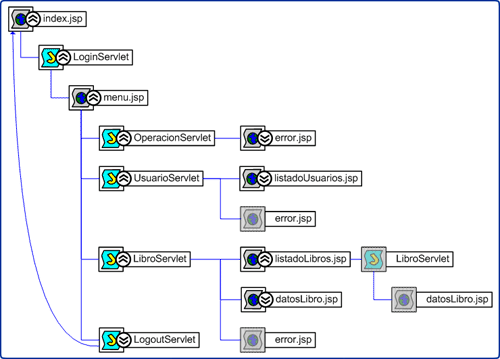

Aplicación web con servlets y JSPs
Introducción
En esta sesión de integración vamos a refactorizar la aplicación web dinámica desarrollada en la sesión anterior separando la presentación (JSPs) del procesamiento (servlets). Además, añadiremos las funcionalidades de login y logout, controlando los permisos de acceso de cada tipo de usuario a cada funcionalidad de la web.
Separación en servlets y JSPs
En la sesión anterior implementamos una aplicación web con una serie de servlets que se encargaban tanto de procesar la información necesaria como de generar un documento HTML en el que se presenta el resultado que se le mostrará al usuario. Hemos visto que si bien los servlets son adecuados para procesar la información, a la hora de generar la presentación es más conveniente utilizar JSPs. El patrón Modelo-Vista-Controlador (MVC) proporciona esta separación, dejando la vista (presentación) en los JSP separada del controlador y del modelo, que estarán implementados mediante servlets y otros componentes y clases Java.
En esta sesión vamos a refactorizar la aplicación web separando la lógica de negocio (modelo-controlador) y presentación (vista), de forma que los servlets simplemente procesarán la información necesaria, y proporcionarán el resultado de este procesamiento a un JSP que se encargará de generar la presentación de dicho resultado.
|  |
Se deberán implementar las siguientes páginas JSP:
Nota
Las páginas index.jsp, menu.jsp y pie.jspf se
realizarán en el segundo apartado de esta sesión de integración.
|
Estos JSPs sólo deberán ser llamados desde los servlets de la aplicación, nunca directamente desde el cliente. Para evitar que esto ocurra, los pondremos en un directorio protegido mediante seguridad declarativa del servidor al que no tendrá permiso para acceder ningún usuario. Este directorio se llamará jsp e impediremos el acceso a su contenido introduciendo las siguientes etiquetas en el descriptor de despliegue (web.xml):
<security-constraint>
<web-resource-collection>
<web-resource-name>JSPs</web-resource-name>
<url-pattern>/jsp/*</url-pattern>
</web-resource-collection>
<auth-constraint></auth-constraint>
</security-constraint>
Dado que lo deseable es separar lógica de negocio y presentación, será conveniente evitar introducir código Java directamente en los JSPs (scriptlets) siempre que sea posible. Para ello utilizaremos librerías de tags como JSTL. Vamos a ver como ejemplo la implementación de la función de listar libros (listadoLibros.jsp):
<%@ page language="java" contentType="text/html; charset=ISO-8859-1"
pageEncoding="ISO-8859-1" %>
<%@ taglib prefix="c" uri="http://java.sun.com/jsp/jstl/core" %>
<!DOCTYPE html PUBLIC "-//W3C//DTD HTML 4.01 Transitional//EN"
"http://www.w3.org/TR/html4/loose.dtd">
<html>
<head>
<title>Listado de libros</title>
</head>
<body>
<h1>Listado de libros</h1>
<ul>
<c:forEach var="libro" items="${requestScope.lista}">
<li><a href="accionLibro?accion=seleccionar&isbn=${libro.isbn}">
${libro.titulo}</a>, <em>${libro.autor}</em></li>
</c:forEach>
</ul>
</body>
</html>
Para poder utilizar JSTL, deberemos descargar la librería de tags Standard 1.1 de Jakarta y copiar los ficheros jstl.jar y standard.jar a la carpeta /WEB-INF/lib del proyecto web.
El aspecto de este listado será el siguiente:

Para utilizar este JSP deberemos modificar el servlet LibroServlet implementado en la sesión anterior, de forma que en lugar de generar él mismo el HTML, redirija la petición al JSP proporcionando la lista de usuarios a mostrar en el ámbito de la petición. Actualmente, la implementación de la función para la obtención del listado de libros es como la siguiente:
private void listaLibros(HttpServletRequest request, HttpServletResponse response)
{
String contenido = "";
FactoriaDAOs fd = FactoriaDAOs.getInstance();
ILibroDAO il = fd.getLibroDAO();
List<LibroTO> lista = null;
try
{
lista = il.getAllLibros();
if (lista != null)
{
contenido = "<ul>";
for (int i = 0; i < lista.size(); i++)
{
LibroTO libro = lista.get(i);
contenido += "<li>" +
libro.getIsbn() + "-" +
libro.getTitulo() + "-" +
libro.getAutor() + "-" +
libro.getNumPaginas() + " pags.</li>";
}
contenido += "</ul>";
generaPagina(contenido, response);
return;
} else {
generaPagina("<h2>No se encontraron resultados</h2>", response);
}
} catch (Exception ex) {
generaPagina("<h2>Error recuperando listado</h2>", response);
return;
}
}
Para hacer que utilice el JSP que hemos descrito anteriormente deberemos hacer los siguientes cambios:
private void listaLibros(HttpServletRequest request, HttpServletResponse response)
throws ServletException, IOException
{
FactoriaDAOs fd = FactoriaDAOs.getInstance();
ILibroDAO il = fd.getLibroDAO();
List<LibroTO> lista = null;
try
{
lista = il.getAllLibros();
if (lista != null)
{
request.setAttribute("lista", lista);
doForward(request, response, "/jsp/listadoLibros.jsp");
return;
} else {
request.setAttribute("error", "No se encontraron resultados");
doForward(request, response, "/jsp/error.jsp");
}
} catch (Exception ex) {
request.setAttribute("error", "Error recuperando listado");
doForward(request, response, "/jsp/error.jsp");
return;
}
}
private void doForward(HttpServletRequest request, HttpServletResponse response, String path)
throws ServletException, IOException {
ServletContext sc = this.getServletContext();
RequestDispatcher rd = sc.getRequestDispatcher(path);
rd.forward(request, response);
}
Se deberá seguir este mismo esquema para las funcionalidades de obtener los datos de un libro (datosLibro.jsp) y de obtener el listado de usuarios (listadoUsuarios.jsp).
Control de acceso a los usuarios
Vamos a implementar el control de acceso de los usuarios a la aplicación. A partir de ahora para acceder a la aplicación será necesario hacer login previamente. Según el tipo de usuario que haya entrado, la aplicación deberá mostrar unas opciones u otras. Las opciones que se deberán mostrar para cada uno de estos tipos son:
- Administrador
- Alta de usuarios
- Baja de usuarios
- Selección de un usuario
- Listado de usuarios
- Bibliotecario
- Alta de libros
- Baja de libros
- Selección de un libro
- Listado de libros
- Registrados (Socios y profesores)
- Selección de un libro
- Listado de libros
- Realización de reservas
Se deberá impedir que los usuarios efectúen acciones para las cuales no tienen permiso.
Por ejemplo, la página principal para los usuarios de tipo socio o profesor tendrá las siguientes opciones:

Para identificar al usuario que ha entrado en la web introduciremos un objeto UsuarioTO como atributo usuario en el ámbito de la sesión, con los datos de dicho usuario. Si este atributo estuviese vacío, se entenderá que el usuario no ha hecho login.
Deberemos llevar el menú principal de acciones, que antes era público en el índice de la web (index.html), a una página privada a la que llamaremos menu.jsp que estará ubicada dentro del directorio jsp creado anteriormente. Ahora, en lugar del anterior index.html, como índice tendremos en el directorio raíz de la web una página JSP llamada index.jsp que contendrá el formulario de login.
- index.jsp: Si ningún usuario ha hecho login mostrará el formulario de login en el que se deberá introducir el login y password. En caso contrario nos redirigirá a la página menu.jsp. Si esta página recibe un atributo error en el ámbito de la petición deberá mostrar el mensaje de error correspondiente.
- menu.jsp: Nos mostrará los formularios para realizar las acciones para las que tenga permiso el usuario que ha entrado en la web.

El formulario de login llamará a un servlet LoginServlet que deberemos implementar. Este servlet tomará dos parámetros de entrada: login y password. Si dicho usuario existe, obtendrá sus datos de la BD mediante el DAO e insertará el objeto UsuarioTO correspondiente como atributo usuario de la sesión y redirigirá la respuesta a la página menu.jsp. En caso de que el usuario no sea correcto u ocurra algún error en el acceso a la BD, redirigiremos la salida a index.jsp introduciendo el mensaje de error correspondiente como atributo error en la petición.
A pesar de haber hecho que sólo aparezcan en el menú las acciones para las que tengamos permiso, un usuario podría introducir directamente en la barra de direcciones la URL para invocar una acción para la que no tenga permiso. Por ejemplo, podría introducir en el navegador una URL como la siguiente:
http://localhost:8080/proy-int/accionLibro?accion=eliminar&isbn=0131401572
Con esta URL cualquier usuario podría eliminar un libro aunque no fuese bibliotecario. Para evitar este problema, antes de realizar cada acción comprobaremos en el correspondiente servlet si el usuario actual tiene permisos para realizarla. Esto lo haremos de la siguiente forma:
public void doGet(HttpServletRequest request, HttpServletResponse response)
throws ServletException, IOException
{
String parAccion = request.getParameter("accion");
if ("listar".equals(parAccion)) {
// Listado de libros
if(!compruebaPermisos(request, TipoUsuario.profesor) &&
!compruebaPermisos(request, TipoUsuario.socio) &&
!compruebaPermisos(request, TipoUsuario.bibliotecario)) {
request.setAttribute("error", "Se necesita ser profesor, socio o " +
"bibliotecario para obtener el listado de libros");
doForward(request, response, "/jsp/error.jsp");
} else {
listaLibros(request, response);
}
} else if ("seleccionar".equals(parAccion)) {
...
}
private boolean compruebaPermisos(HttpServletRequest request, TipoUsuario tipo) {
HttpSession sesion = request.getSession();
UsuarioTO usuario = (UsuarioTO)sesion.getAttribute("usuario");
if(usuario==null) {
return false;
} else {
return usuario.getTipo()==tipo;
}
}
Por último, implementaremos un servlet LogoutServlet que establecerá el atributo usuario de la sesión a null y redirigirá la petición a index.jsp para que nos vuelva a mostrar el formulario de login.
Haremos que todas las páginas de la web tengan en el pie un enlace para volver al índice y otro enlace para cerrar la sesión (logout), en el caso de que el usuario hubiese hecho login. Dado que estos enlaces deberán aparecer en todas las páginas, definiremos un fragmento JSP llamado pie.jspf dentro del directorio jsp para que pueda ser incluido como pie en todas las páginas.
Resumen
En esta sesión se deberá entregar el espacio de trabajo del proyecto de integración actualizando el proyecto web con los siguientes puntos:
- Añadir la librería jstl.jar al directorio WEB-INF/lib del proyecto web.
- Implementar los JSPs listadoUsuarios.jsp, listadoLibros.jsp, datosLibro.jsp y error.jsp en el directorio jsp.
- Añadir seguridad declarativa para impedir el acceso al directorio jsp desde el cliente.
- Actualizar las acciones para listar usuarios (en UsuarioServlet), listar libros y seleccionar un libro (en LibroServlet) para que redirijan la petición a los JSPs anteriores.
- Implementar el formulario de login en la página index.jsp y los servlets LoginServlet y LogoutServlet.
- Eliminar el anterior índice index.html y llevar ese menú a la página menu.jsp que mostrará sólo las opciones para las que tiene permiso el usuario actual.
- Actualizar los servlets realizados en la sesión anterior (UsuarioServlet, LibroServlet y OperacionServlet) para que comprueben los permisos del usuario a la hora de realizar cada posible acción.
- Añadir un pie de página común (pie.jspf) a todos los JSPs del sitio web con las opciones Volver al índice y Cerrar sesión.
El árbol de navegación de la web será el siguiente:

En el diagrama anterior podemos observar la estructura del sitio web desde el punto de vista del cliente. Sin embargo, si prestamos atención a los componentes y a las llamadas que se realizan entre ellos de forma interna en el servidor, tendremos un diagrama como el siguiente:
